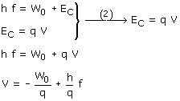

a) Los fotones de la radiación arrancan electrones del metal y les dan energía cinética: La energía cinética de los electrones se puede determinar a partir del potencial de frenado: Combinando las dos expresiones anteriores resulta:  La gráfica de esta ecuación
es una recta de pendiente negativa (q es negativa) cuya ordenada en el
origen es positiva (q es negativa). La gráfica que nos da el problema
es justo al revés. |